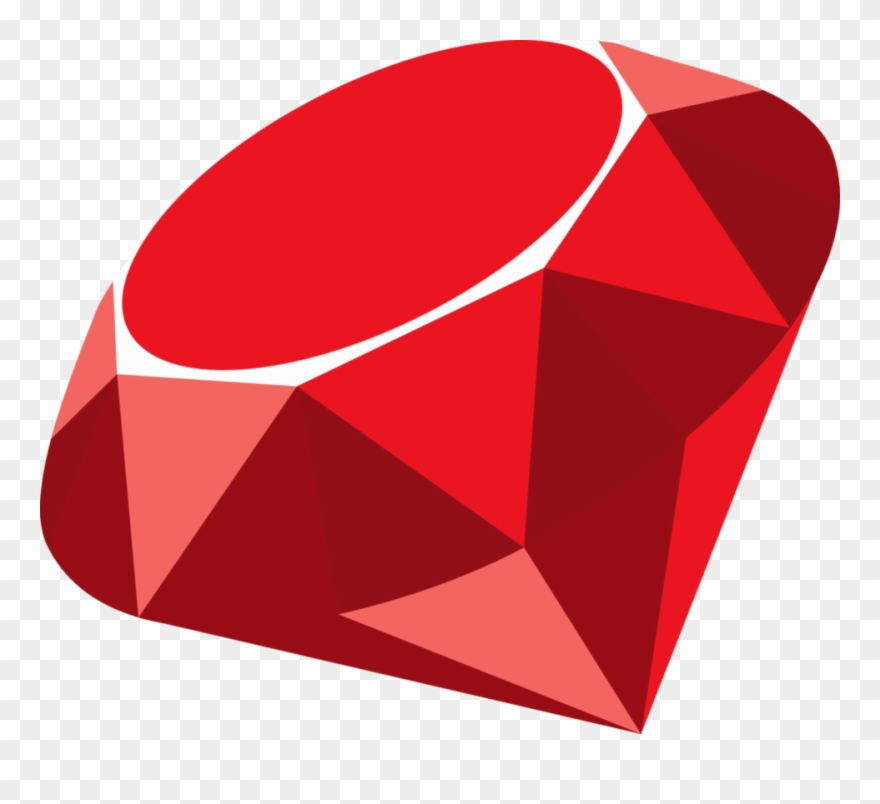
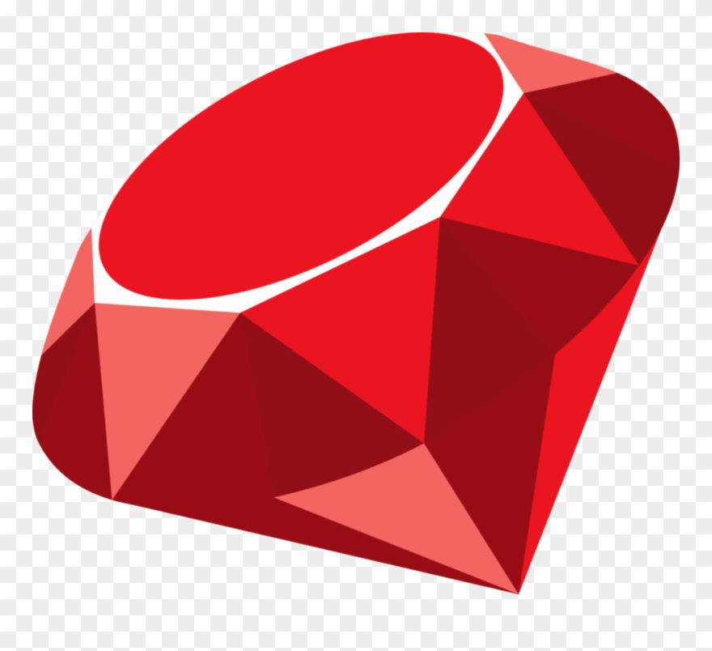
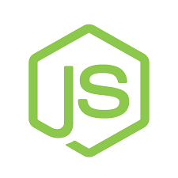
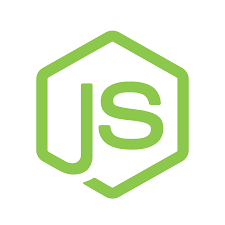
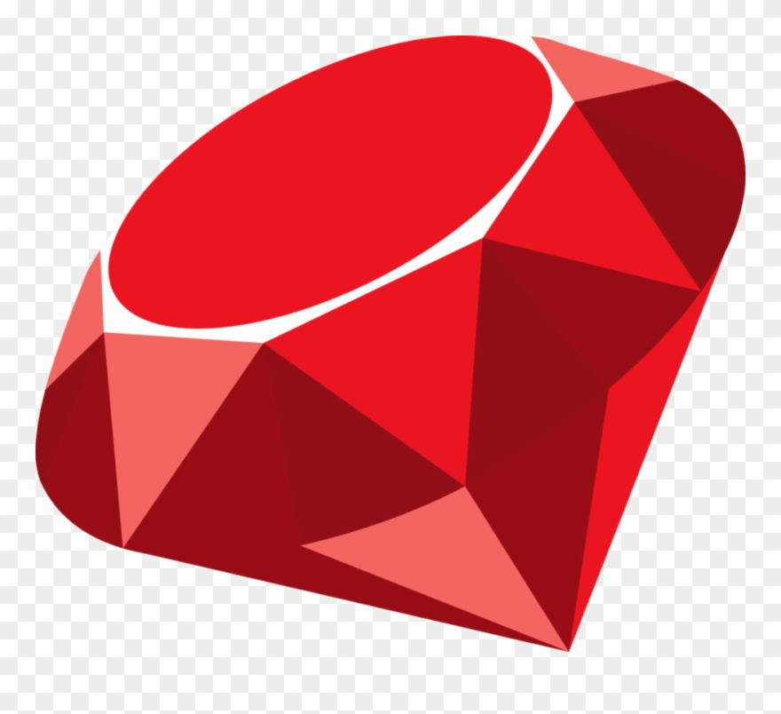
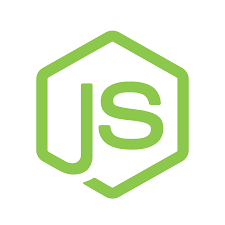
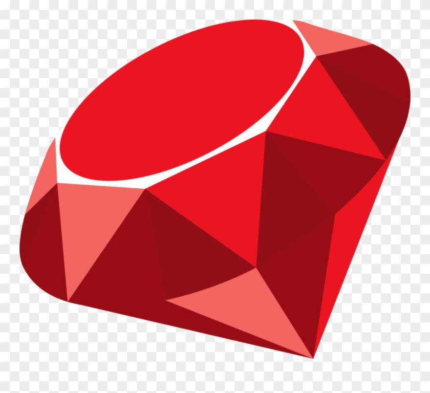
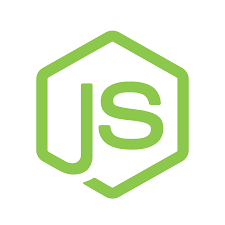

Skills

 

 



 



My First Project, Tic-tac-toe, really allowed me to get a handle on html, css, javascript, and jquery for making api requests. I was very unfamiliar with most everything, but especially the interaction between back and front end, aka API requests. This project helped me a lot in giving me a basis of making such requests, as well as getting familiar with logic and implementation of such based on what I'm trying to accomplish. In this case, the logic was test every time a new target was clicked to every winning order, or ending game and having it being a tie when appropriate. I really enjoyed building the logic portion, and understanding jquery and ajax.
Book Clubs! Repo Book Clubs! SiteMy Second Project, Book Clubs, immersed me in the backend part of things, where we had to develop a working back and front end that communicated with each other and stored data in a relational database. It also furthered my skills in html, css, javascript, jquery, and ajax. Understanding the innerworkings of databases and their interactions is a difficult process, and this project allowed me to see what things can and should be in the back end, versus the goal of the front end and what you should be included there instead of the back end, or not. This was my first interaction with back end/fullstack, and it was a great way to help my knowledge of fullstack development with relational databases, and manipulation of them.
Letterbox Repo Letterbox SiteThis was a group project that I am very proud of making with my classmates. We did a lot of planning and strategizing, which ended up being very important in the implementation process. We did a lot of pair programming, and when we were done with a certain feature, we would all decide what we wanted to do next and how we were going to execute it. I found it very valuable to work with others and bounce ideas off each other and work together to create something awesome. We were able to create user authentication features, with their own blogs, and their own comments on any blogs. We were also able to add a 'like' button so users could like blogs. We sort the blogs by number of likes tied to amount of time since blog post, where newer blogs with the a certain number of likes will be higher up than older blogs with the same number of likes. We also contrived a search by blog titles, blog bodies, and user handles to see blogs matching those fields. As a team, through effective planning and strategizing, were able to implement a lot of features in not a lot of time, something I am proud of as a team member.
Capstone Repo Pico Fermi SiteFor my final project, I built a full stack guessing number game. I used react in the front end and ruby on rails in the back end. I found I really enjoy working with react. It is awesome to be able to split routes and render whatever you want for each with ease. React is great for organization and using component templates/forms, which I really like. Through this, I was able to implement two different game types, each with their own back end route and schema. One game involves guessing three digit number, and the other a four digit number. I was able to set up links and routes using react, and easily rendered them how I liked for each. I would definitely like to work with react on future projects. As for rails, I was able to get a lot more comfortable working with it and managing my migrations and schema. I look forward to continued learning in this particular stack.